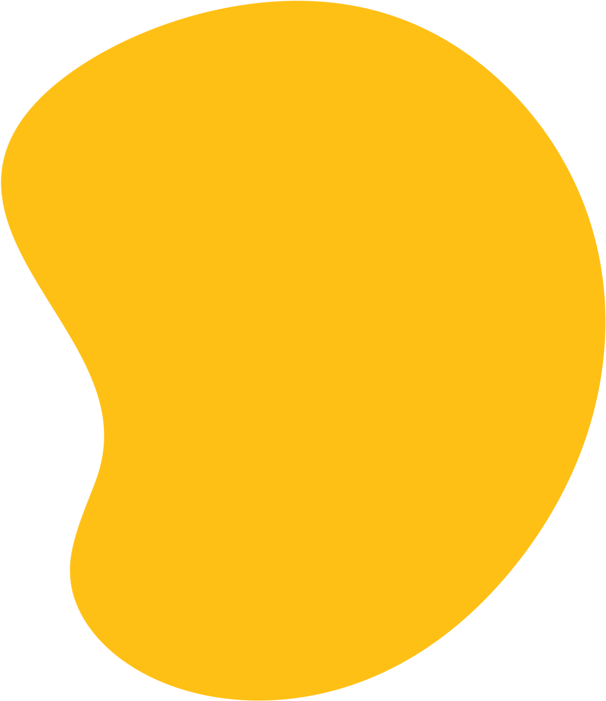

Hi, I'm Lucas a front-end web developer
Click on a date/school name for further details...
After spending three years in high-school, i graduated with a scientific baccalaureate with honours, with consisted of mathematics, physics, chemistry and information technology.
After a semester of studying engineering, I deceided to reorient myself in order to study something I truly am passionate about : coding.
I begun studying digital with an accelerated training at the start of 2022 wich allowed me to avoid losing a year. I then chose to specialise myself in coding and digital innovation, wich I am currently learning.